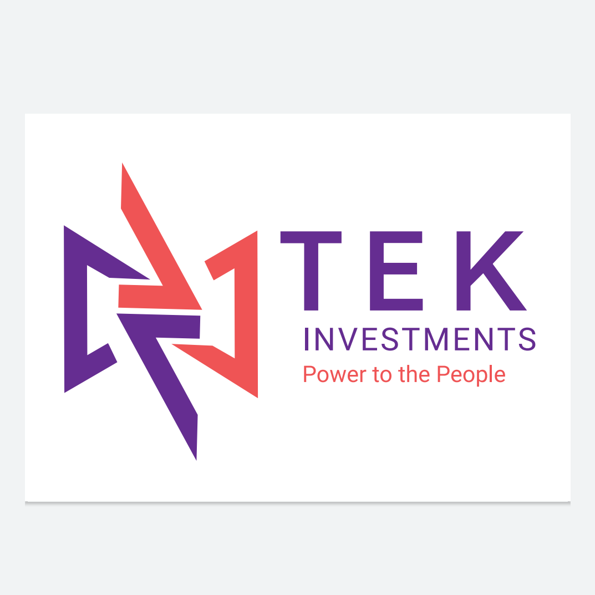

Train
Hands-on cybersecurity learning rooted in industry practice and EC-Council-aligned delivery.

ICT consultancy services
TEK Investments is a Gaborone-based consultancy helping organizations secure digital assets, strengthen governance, improve quality, and align technology decisions with business goals.
Security reviews, penetration testing, and risk assessments that reveal what matters most.
Hands-on cybersecurity learning rooted in industry practice and EC-Council-aligned delivery.
Quality assurance, policy development, and strategic ICT planning that strengthen operations.
Power to the People
Cybersecurity Assessments
Quality Assurance
Enterprise Risk Management
ICT Consultancy
About TEK Investments
TEK Investments specializes in cybersecurity services, quality assurance, and risk assessments. The firm combines practical technical expertise with a commitment to operational excellence, helping clients improve resilience while supporting sustainable growth.
Vision
To be the trusted partner for organizations seeking comprehensive ICT consultancy services, ensuring digital security and operational excellence in a rapidly transforming technological environment.
Mission
To provide innovative, reliable, and efficient cybersecurity and ICT consultancy services that help businesses safeguard their digital assets, streamline processes, and achieve strategic goals.
Core Services
01
Identify weaknesses early and understand how attackers could exploit them before they become business-impacting incidents.
02
Upskill teams with practical, role-relevant training led by a Certified Ethical Hacker and experienced trainer.
03
Improve governance, manage business risk, and reinforce service quality with clear assessment and improvement plans.
04
Build secure systems and align technology initiatives with the business outcomes your organization is pursuing.
Methodology
Review current systems, risks, controls, and operating realities to establish a solid baseline.
Create tailored solutions that match the organization’s priorities, constraints, and maturity level.
Deploy recommendations with a focus on business continuity and minimal operational disruption.
Monitor results, report progress, and refine next steps to keep risk reduction and quality gains visible.
Training and Capability Building
TEK Investments delivers specialized cybersecurity training designed to equip professionals and organizations with practical skills and hands-on understanding. Programs are underpinned by EC-Council and aligned to real-world industry needs.
Let’s Start
Reach out to discuss vulnerability assessments, training, quality assurance, or a tailored ICT consultancy engagement.